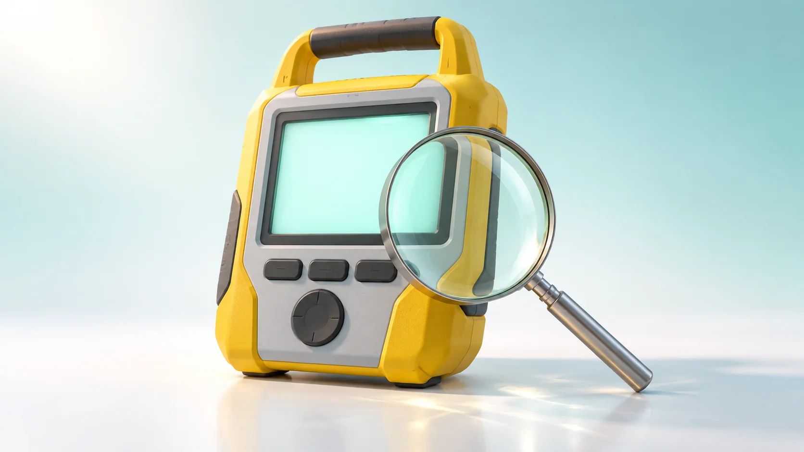
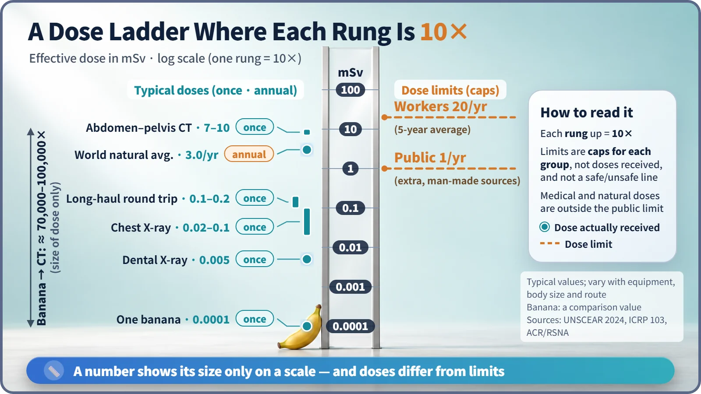
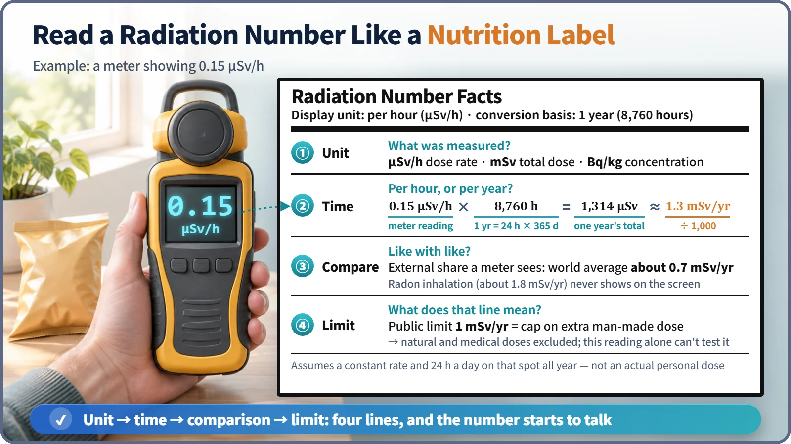

Nuclear & Radiation Basics · 025
Read It Like the Nutrition Label on a Bag of Chips — How to Interpret Everyday Radiation Numbers
A radiation number only makes sense once you check its unit, its time period, a fair comparison and the meaning of the reference line.

Read any radiation number in four steps: what unit it is, what time period it covers, what it can fairly be compared with, and what the reference line means. Bq, μSv/h and mSv measure different things, an hourly meter reading must be converted before it can be compared with yearly figures, and a dose limit is a regulatory cap, not a line between safe and dangerous. [1]
The fine print on the bag
You finish a bag of chips, see "150 kcal" on the back and relax, then notice the fine print: "per serving (30 g)." The bag held 90 g. Radiation numbers hide the same trap. "0.15 microsieverts per hour" is hard to judge not because the number is difficult but because we don't know the order in which to read it.
Question one: what is the unit?
| Unit | What it measures | Everyday analogy |
|---|---|---|
| Bq/kg | Concentration: decays per second in 1 kg of food or soil. Not a dose a person receives (South Korea's food cesium limit is 100 Bq/kg) | Ingredient content |
| μSv/h | Dose rate: dose received per hour at this spot | Speedometer |
| mSv | Accumulated dose over a period (1 mSv = 1,000 μSv) | Odometer |
A becquerel number can't be weighed directly against a sievert number; converting concentration to dose requires knowing which element was taken in, and how much. [2]
Question two: per serving, or the whole bag?
A meter shows a rate per hour, but most comparisons are per year. A year is 24 × 365 = 8,760 hours, so 0.15 μSv/h × 8,760 = 1,314 μSv, about 1.3 mSv per year. Shortcut: μSv/h × 8.76 ≈ mSv/year. In South Korea the ambient dose rate normally ranges from roughly 0.05 to 0.3 μSv/h depending on location and weather, rising briefly when rain washes natural radioactive material out of the air. [3]
This assumes the value never changes and you stand on that spot 24 hours a day all year. It's a rough figure for getting a feel, not the dose you actually receive.
Question three: compared with what?

| Exposure | Typical effective dose |
|---|---|
| One banana | about 0.0001 mSv |
| One chest X-ray | about 0.02–0.1 mSv |
| Long-haul round-trip flight (such as Seoul–New York) | about 0.1–0.2 mSv |
| World average natural radiation | about 3.0 mSv per year (South Korea also around 3 mSv) |
| One abdominal–pelvic CT scan | about 7–10 mSv |
The world average for natural radiation was long quoted as 2.4 mSv per year; UNSCEAR revised it to about 3.0 mSv in its 2024 report because of more data and better methods, not because radiation increased. By dose alone, a banana and a CT scan differ by roughly 70,000 to 100,000 times. [4] [5]
One trap: the 1.3 mSv from a meter can't be compared directly with the 3.0 mSv of natural radiation. A handheld meter mainly measures gamma rays from outside the body, while the largest share of natural dose (about 1.8 mSv) comes from inhaled gases such as radon and about 0.5 mSv from food. Neither shows on the screen. The external share (ground gamma rays plus cosmic rays) is about 0.7 mSv per year worldwide. Compare like with like.
Question four: is going over the limit poisonous?
Going slightly over a 2,000 mg sodium guideline doesn't make you ill that day; a guideline is a management target. The public dose limit of 1 mSv per year is similar: it caps the extra dose the public receives from regulated man-made sources such as nuclear facilities, and excludes natural radiation and medical exposure. So a meter's 1.3 mSv per year, mostly natural radiation, can't be checked against it. Medical exposure is managed by asking whether it is necessary and as low as possible, because the patient benefits from the diagnosis. Radiation workers are limited to 100 mSv over five years (20 mSv per year on average), with no single year above 50 mSv, because they work under dosimeter monitoring and training, not because their risk is viewed differently. [6]
Radiation protection assumes that even a very small dose carries some risk in proportion to the dose, the linear no-threshold (LNT) assumption. Below 100 mSv the risk is too small for epidemiology to pin down, and scientists still debate whether the assumption overstates or understates it. A limit is therefore a cautious regulatory cap, applied together with the principle of reducing doses further where reasonably possible. [7]
Four questions on one label

What unit is it? Per hour or per year? What can it be compared with? What does the reference line mean? Readings from monitoring stations around nuclear plants and the mSv building up on a worker's dosimeter are read in exactly this order.